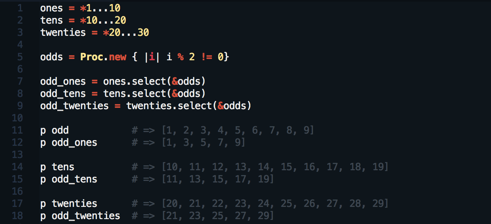
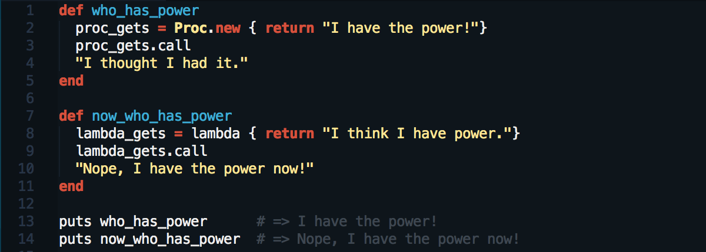

What are Blocks, Procs, and Lambdas?
by Ernie Salazar
Posted on May 30, 2014
As we learn more about Ruby as a programming language, we get to explore the many ways in which we can interact with, alter and change objects. Three dynamic and useful tools towards that end are blocks, Procs and lambdas. Let’s learn a little about each and how we can utilize them in our code.
Blocks
You can think of blocks as useful little add-ons that interact with certain methods. They are especially useful when iterating using methods like #each or #times. They are also key to the success of methods like #collect and #select. Blocks can be built using either do…end syntax or more commonly, the { } syntax.

Procs
In Ruby, almost everything is an object. One of the few exceptions to that rule are blocks. They aren’t objects and as such have a limited function. They aren’t embedded with all the powers and abilities of objects. Also, if you plan on using the same block more than once, you’ll need to retype it again and again. Here’s where Procs come in. Procs are objects and as such, can be used to convert our little blocks into more powerful objects that can be used over and over.

Lambdas
Much like Procs, lambdas are also objects. They function very similarly to Procs and can sometimes be used interchangeably. They do have one distinct behavior difference that can have an impact on output. When used within a method, a lambda will execute and then pass control back to the calling method. A Proc on the other hand, when executed will do so immediately without going back to the calling method.

Learn More
As you can see, blocks, Procs and lambdas are great tools to add to our Ruby toolbox. They can increase the scope and power of the methods and objects we build. If you want to learn more about them, check out these useful resources.
- Codecademy - Ruby Track - Blocks, Procs, and Lambdas
- Tuts+ Tutorial - Ruby on Rails Study Guide: Blocks, Procs, and Lambdas
- Rubymonk - Ruby Primer: Ascent - Blocks 0.4 - Blocks, Procs, and Lambdas
They're common elements of many methods and programs. Once you pick up the basic syntax you’ll be coding with blocks, Procs and lambdas too.